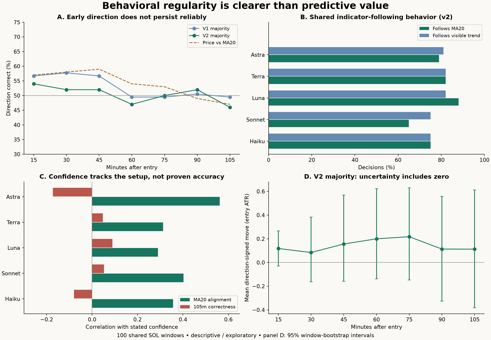

86.2%
AI choices are reproducible
Six pre-entry price/volume features predict v2 long/short choices in grouped cross-validation. This predicts the AI, not the market.
A study of directional bias, confidence and the complete path after entry. Every recorded AI decision is included; the comparative results use the same 100 SOL windows across five models and two rule sets.
Six pre-entry price/volume features predict v2 long/short choices in grouped cross-validation. This predicts the AI, not the market.
Below both moving averages, the v2 majority shorts all 50 windows. Accuracy falls from 68% at candle one to 48% at candle seven.
Astra's confidence tracks agreement with MA20 (q = .002). Its relationship with seven-candle correctness is unproven.
Read the full findings · All decision metrics (CSV) · Research figure (PDF) · Analysis plan

Choose a case, then select a model row. The future path continues after the original exit. Positive in position view means movement in the chosen direction; it is not realized trade profit.
| Model / rules | Direction | Confidence | 15m move | 90m move | 105m move | Time favorable | 105m MFE / MAE |
|---|
Solid line: one-minute closes. Shaded band: each minute's high–low range. Circles: 15-minute closes. Zero: entry. The path is uncensored by stop/target. Both barriers touched within a single minute cannot be ordered.
This is the recorded explanation, not access to hidden internal reasoning. v2 OpenAI collection used desktop agents for the first 86 decisions and fresh CLI calls for the remaining 214.
Original chart file, unchanged. Real asset and date shown in this research view were not the identity supplied to the model.
We measure price movement in the chosen direction at fixed horizons, favorable/adverse excursions, time above or below entry, and early-to-later changes. A stop/target outcome is only an auxiliary reference. A flat decision has no signed path. Fixed-horizon movements exclude fees and leverage.
The agents mostly follow trend and moving averages. In v2, moving-average language appears in 83.3% of wrong-direction decisions and 76.1% of right-direction decisions at seven candles; trend language appears in 76.7% and 70.4%. These overlapping keyword counts are descriptive and dependent across shared windows. They do not establish a reliable losing-trade vocabulary. No future-outcome confidence relationship survives the 40-test adjustment.
Adding AI votes/confidence to a fixed price-feature model changes seven-candle out-of-fold accuracy from 54% to 52%; the Brier-score difference is essentially zero. At every tested forecast horizon, the interval for added AI value spans zero. Models share windows; the effective main sample is 100 events. All 110 context cells are retained in the downloadable scan, including unsuccessful findings.
All candidate cells · Confidence tests · Incremental forecast comparison · Explanation tags
The last visible bar's stored timestamp is its open. Entry is its close 15 minutes later. Raw one-minute data reconstructs future paths; native 15-minute closes verify the first seven candles. All 120 windows have complete 24-hour coverage. Three main window pairs overlap within 24 hours, one within 105 minutes. Cross-validation keeps events within 72 hours in the same fold (92 groups) but is not a walk-forward deployment test. Bootstrap intervals remain approximations. This sample was previously inspected and is not an untouched confirmation set.
Source hashes and inventory · Validation checks · Statistical metadata
From the project root, run the Python files below in order with the project environment. Inputs and existing reports are read only.
.venv/bin/python data/analysis/direction-paths-20260929/build_dataset.py
.venv/bin/python data/analysis/direction-paths-20260929/analyze.py
.venv/bin/python data/analysis/direction-paths-20260929/build_report.py
.venv/bin/python data/analysis/direction-paths-20260929/validate.py